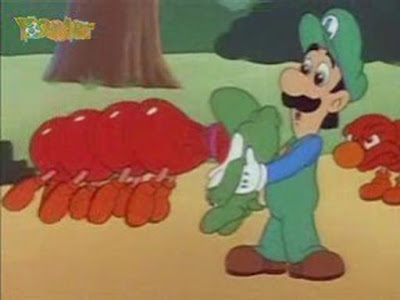

Mama Luigi?
2022-05-30 |
old-videos
AY! WAKE UP! None of this ever happened! It's all calm... what's wrong?? Here... come watch this video I found on YouTube... "Mama Luigi". Wow... does Luigi have children?


Only talked to me if you watched the episode with the "YoshiArt" watermark >:).
Random cartoons uploaded to YouTube were my favourite types of videos - it's hard to get away with that now thooooo.